Standardizing Medicine with Robotics: From Sutures to Epidurals
As a Mechanical Engineering Master’s student with a background in Biomedical Engineering, I’ve been very interested in how engineering and technology can transform healthcare. My focus has been on Surgical Robotics—a field where innovations in precision instruments and evaluation methods can change the way surgeries are performed. In this post, I’ll dive into how robotics is helping to make procedures like epidural placement and suturing more standardized, improving patient outcomes, and reducing the variation in medical practices.
Immersing Myself in Surgical Robotics
To build a stronger foundation in this field, I decided to pursue a certificate in Surgical Robotics and carefully selected courses that would provide both theoretical knowledge and hands-on experience. My journey began with courses like Intro to Robotics and Surgical Robotics, followed by more specialized classes such as Robotic Manipulation and Surgical Robotics Projects. One of the highlights of my training was working with surgical robots, such as the da Vinci system, which offered me valuable insights into the real-world challenges surgeons face and how robotics can address them.
Tackling the Epidural Placement Challenge
Identifying the Problem
One of the major challenges I came across in healthcare was the process of epidural placement. It’s a crucial procedure that directly affects patient care, but it often lacks standardized training and consistent quality control. For a project in my Medical Technologies & Surgical Robotics course, my team and I interviewed residents at the Duke Hospital to understand how they were trained. We learned that the training process relies mostly on observational learning and trial-and-error. Residents watch anesthesiologists perform the procedure, then try to replicate the motions themselves, gradually building the physical intuition needed to succeed.
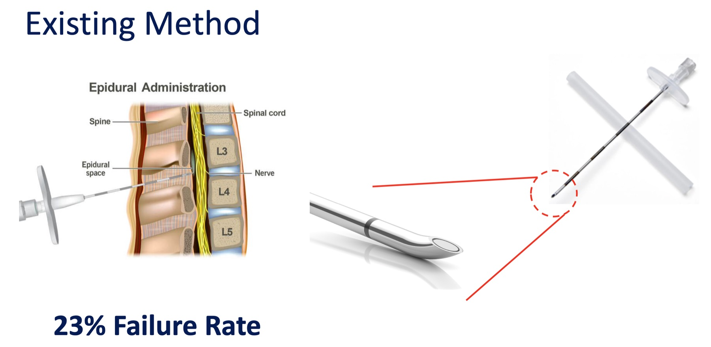
While this method can work, it is time-consuming and imprecise. Even once an epidural is successfully placed, there’s no consistent way to assess whether the placement was optimal, which can lead to variations in patient outcomes.
Designing a Data-Driven Solution
To address this, my team proposed a solution to standardize the learning and placement process by integrating data. We added sensors to the existing epidural placement device, known as the Tuohy needle. By embedding two perpendicular strain gauges, we developed a prototype capable of recording the forces applied during the needle insertion process.
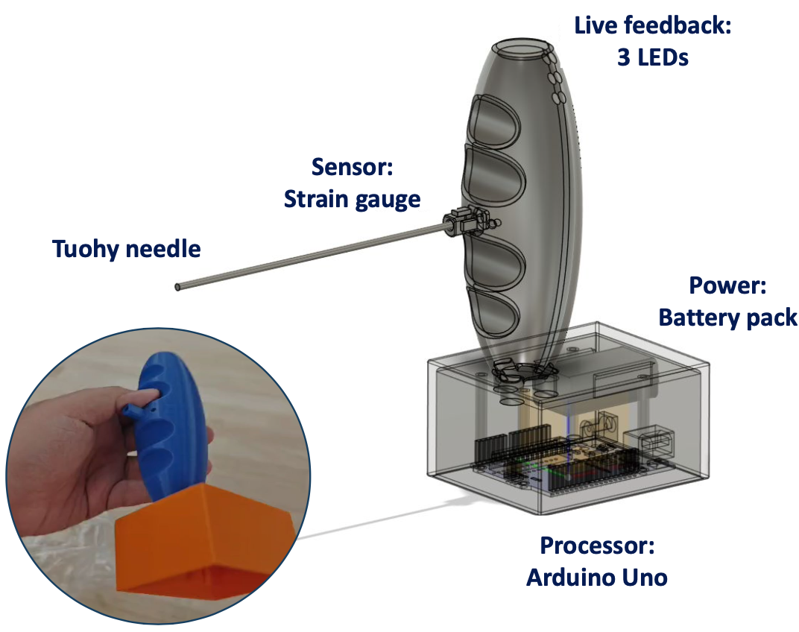
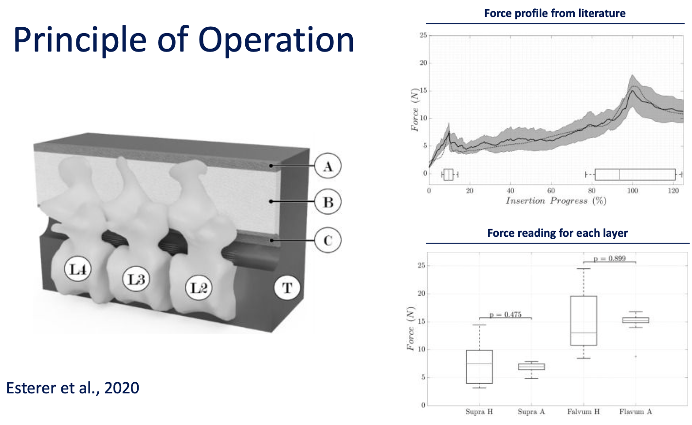
To make the process more interactive, we added a color-coded LED light system—red, yellow, and green—that signals when the needle has reached the proper placement, based on a force threshold algorithm. This feedback not only helps residents learn faster but could also act as an additional sanity check for anesthesiologists, improving placement accuracy and consistency. Below are a few renderings and an animation of the device that I made using Fusion360.
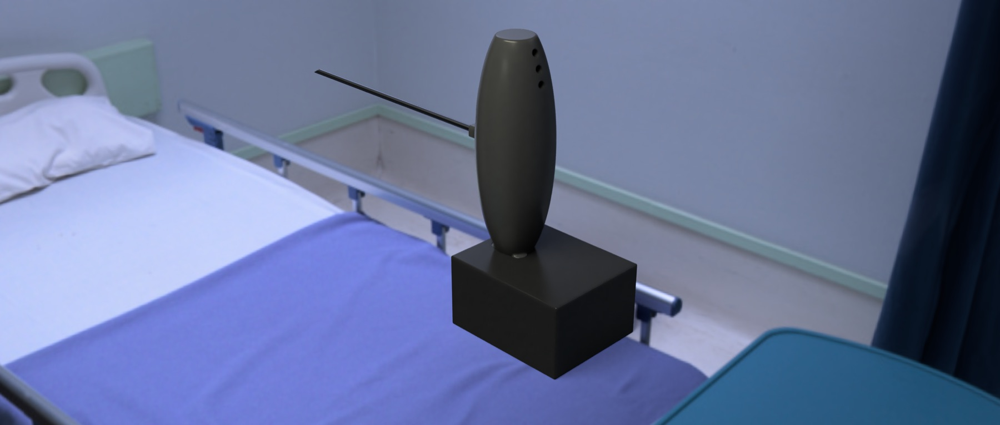
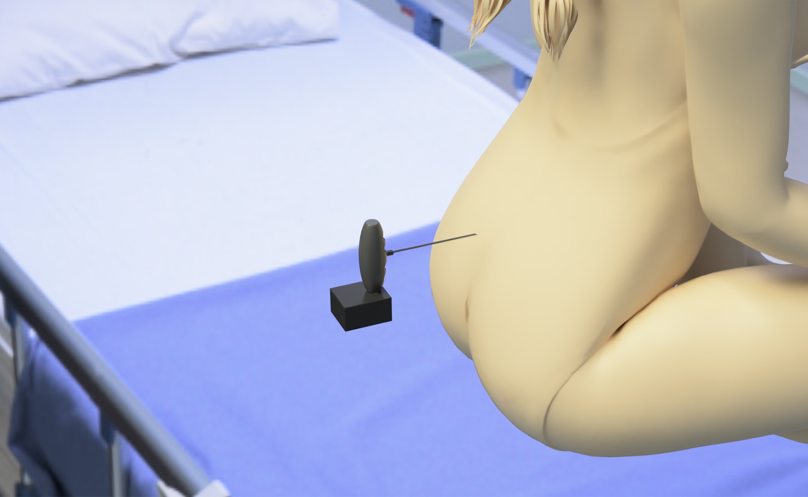
Future Work
With some clinical validation, this technology could be used in real-world settings, helping to improve patient outcomes by reducing variability in epidural placements. Future updates will focus on refining the sensor data, reducing noise, and enhancing the algorithm to incorporate biomechanics data from the literature (Esterer et al., 2020).
Standardizing Suturing with Robotics
The Problem with Suturing Training
Suturing is another key skill that’s typically learned through observation and hands-on practice. However, there’s no standardized method for assessing suture quality, despite research showing that both overly tight and overly loose sutures can lead to complications in tissue healing and integrity.
At Duke Medical School, I joined the Surgical Education & Activities Lab (SEAL) to address this issue. My goal was to develop a device that could standardize how sutures are evaluated and provide real-time feedback to medical students during their training. Below I have included a video of the Da Vinci robot by Intuitive Surgical, which is the focus of my research.
Developing a Novel Suture Force Sensor
In collaboration with the Human-Centered Materials Intelligence Lab, I began designing a filament-like force sensor that could be embedded into tissue phantoms. This sensor measures the change in resistance as the suture tightens around the tissue, providing valuable data on the force being applied during the stitching process. Below are a few sketches from the ideation phase, as well as the final circuit design for the sensor.
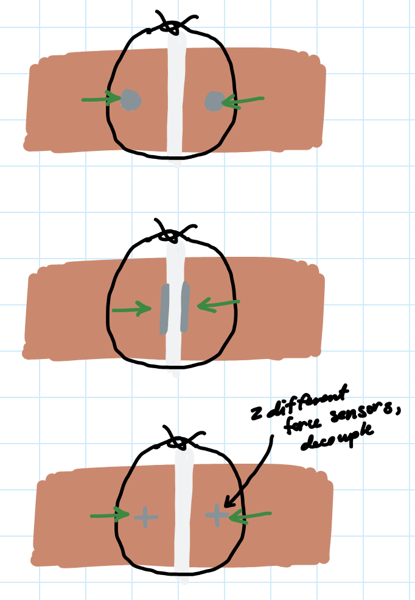
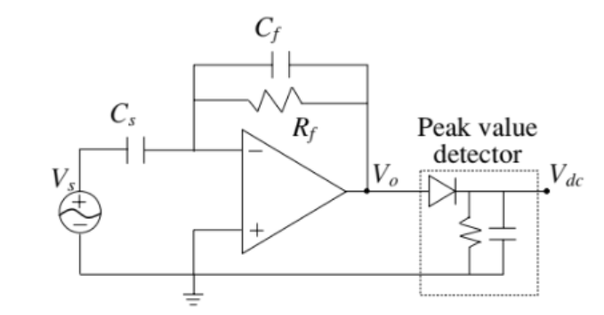
I consulted with PhD candidates from the Human-Centered Materials Intelligence Lab, who specialize in soft robotics and flexible sensors, to determine the best approach for manufacturing and embedding the sensor. We are currently in the process of calibrating the sensor and collecting data that will allow us to create a force profile for expert surgeons.
A Data-Driven Evaluation Tool
Our goal is to create a system that can assess suture quality in real-time using data-driven models, like deep learning, to classify different levels of expertise. By combining sensor data with video footage, we aim to develop a tool that evaluates a student’s suturing technique based on the force applied, providing real-time visual feedback. This could help reduce errors and speed up the learning process.
Robotic Suturing: Automating the Surgical Process
A Hands-On Robotic Suturing Project
As part of my Intro to Robotics class, I teamed up with two fellow Master’s students to design and build a “suturing robot” using the UR5e robotic arm and ROS2 (Robot Operating System). Though the task of tying a knot was too complex for us to tackle given our limited resources, we found a way to demonstrate basic suturing motions with the robot on a silicone tissue phantom.
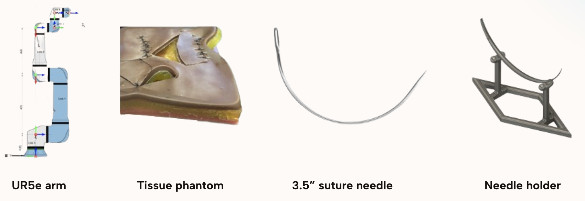
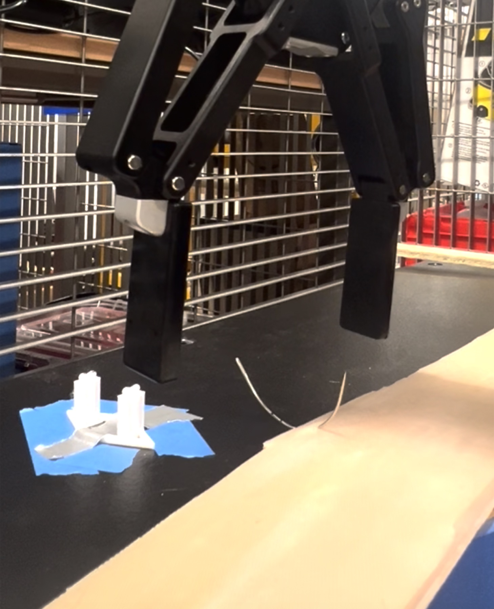
Using ROS2 and simulation tools like Gazebo, RViz, and MoveIt2, we programmed the robot to retrieve the needle from a stand, insert it into the side of the tissue, and pull the needle through, simulating the process of suturing. The goal was to test the feasibility of using robotic arms for suturing tasks in a highly controlled environment. Shown below are a photo of the needle insertion and video of the full demonstration.
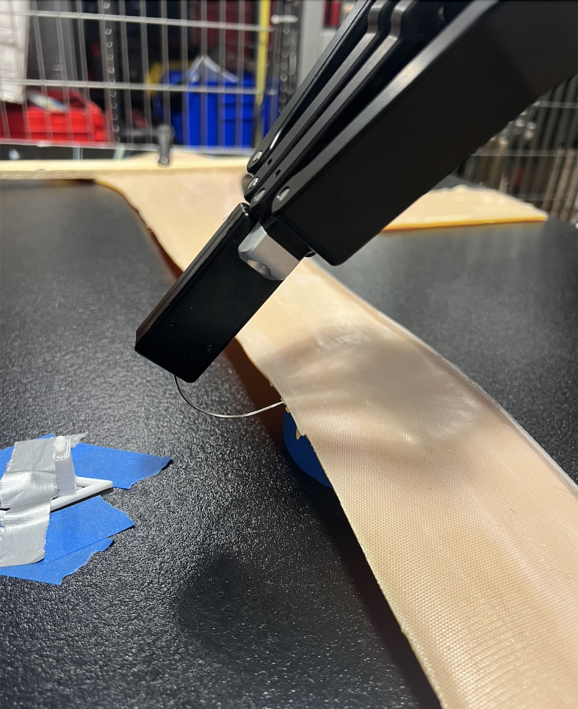
Future Directions for Robotic Suturing
While our project was a simplified version of what a real-world suturing robot would look like, it demonstrated the potential for robotics to enhance the consistency and efficiency of suturing. Future versions will likely incorporate stereo vision to improve needle alignment and machine learning to adapt to the variability of the system, such as different tissue types, needle sizes, and stitching patterns.
With ongoing advancements in machine learning and robotics, I see a future where “suturing robots” are standard in operating rooms, performing repetitive tasks with precision and consistency, much like a sewing machine. These systems could help reduce the cognitive load on surgeons, standardize care, and ultimately improve patient outcomes.
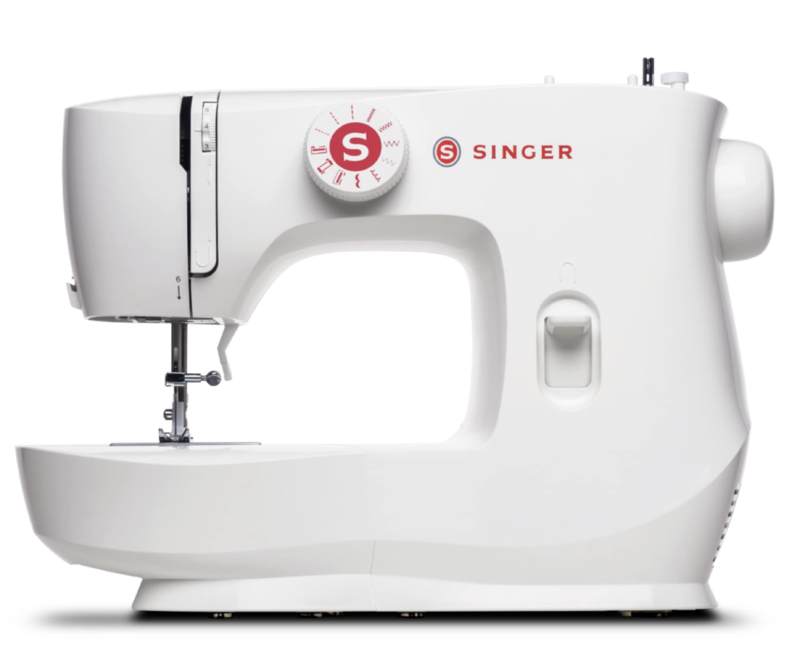
My Takeaways
One of the most exciting aspects of these projects is the potential to use data not only to standardize medical procedures, but also to enhance them. By integrating sensors and robotics into procedures like epidural placement and suturing, we can collect valuable intraoperative data that helps track patient outcomes and measure surgeon performance.
As we gather more data from these systems, we’ll gain deeper insights into how technique, consistency, and outcomes are related. This data-driven approach will not only speed up the learning process for residents but also give surgeons real-time feedback to improve their practice.
With the development of sensor-equipped tools and robotic systems, the standardization of medical procedures is quickly becoming a reality. By incorporating data-driven feedback into both training and clinical practice, we can make procedures like epidural placement and suturing more consistent, ultimately enhancing patient safety and outcomes. As surgical robotics continues to advance, I’m excited to be part of this transformative journey toward more efficient and standardized healthcare.